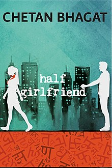

This is Poojitha Naradasu.I am from India.I came to United States to pursue my Master's in Applied Computer Science.I am very keen about programing and am very interested in learning new things.I also have extra-curricular activitites like singing and dancing during my free time.
Emotions of character like Madhav and Riya explain their personalities and the author has conveyed it well.Life in the real India, especially in the rural areas is explained. Power shortages, peoples' mindsets, child labour is all described.The US landscape has been done better than any other setting in the story. A sense of direction in evolved and the easiness of the system is explained. The author has particularly described every detail perfectly and I think it is a plus point.
